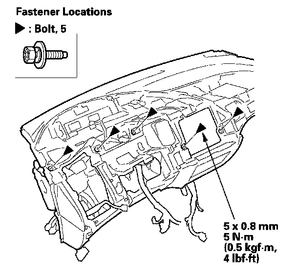
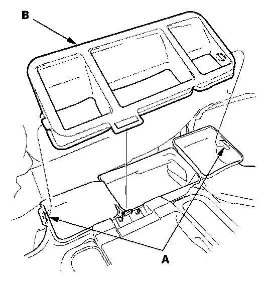
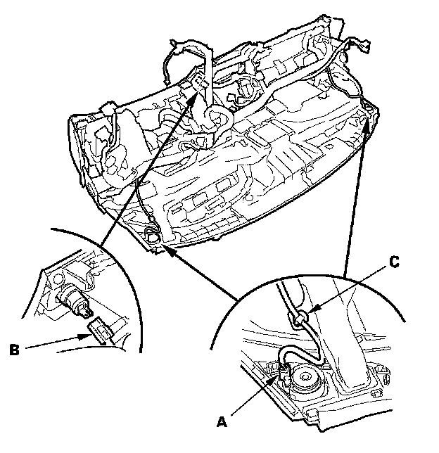
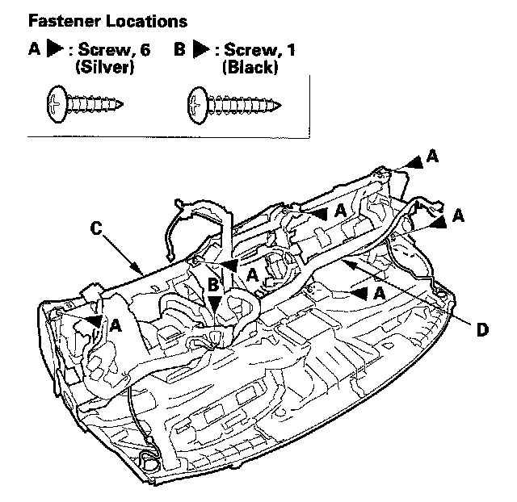

Overhaul
Dashboard/Steering Hanger Beam Disassembly/ReassemblySpecial Tools Required
KTC trim tool set SOJATP2014 *
* Available through the American Honda Tool and Equipment Program
NOTE:
- Put on gloves to protect your hands.
- Take care not to scratch the dashboard and related parts.
- Take care not to bend the brackets.
- Use the appropriate tool from the KTC trim tool set to avoid damage when prying components.
1. Remove the dashboard/steering hanger beam.
2. Remove these items from the dashboard:
- Instrument panel
- Gauge control module (speedo) trim
- Subdisplay visor
- Audio unit, without navigation system
- Navigation unit, with navigation system
- Passenger's airbag
- Gauge control module (speedo)
- Gauge control module (tach)

3. Remove the bolts.

4. From the back of the dashboard, release the hooks (A), then remove the center joint duct (B).

5. From the back of the dashboard, disconnect the tweeter connectors (A) and the accessory socket connector (B), then detach the harness clips (C).

6. From the back of the dashboard, remove the screws (A, B), then separate the dashboard (C) from the steering hanger beam (D).
7. Assemble the dashboard and steering hanger beam in the reverse order of removal, and note these items:
- Make sure the dashboard wire harness is not pinched.
- Make sure the connectors are plugged in properly.